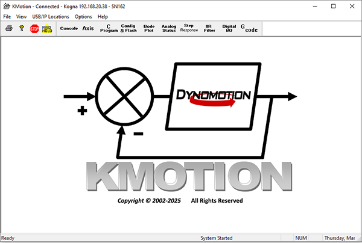
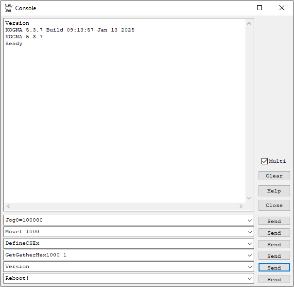
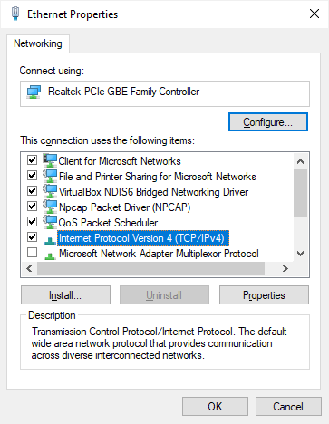
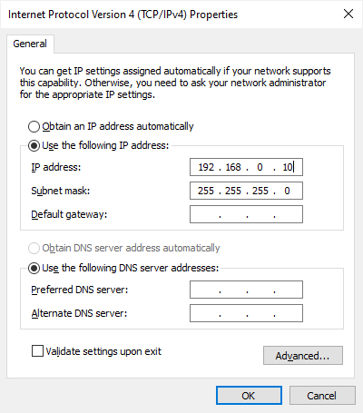

Kogna QuickStart
Remove the Kogna Board from the anti-static packaging in a static safe environment.
Note: Immediately before touching any electronic component, always discharge any static electricity you may have by touching an earth ground, such as the metal chassis of a PC.
Kogna may operate on +5V powered from the USB by inserting J2. Total power must be < 0.5A for USB powered operation. Otherwise remove J2 and connect a +5V power supply to the Kogna 4 pin Molex connector. If using an ATX supply see here.
Connect the USB or turn on the +5V supply. Two green LEDs should blink rapidly for a few seconds (Kogna is checking if the Host is requesting a Flash Recovery during this time), and then the LEDs should remain steady.
Please download and install the latest software from: http://dynomotion.com/Software/Download.html. The installation will create a Windows™ Start button link to further help and to the KMotion Setup and Tuning Application.
Table of Contents:
- Ethernet Connection
- Verify Ethernet Connection
- IP Address Assignment
- Kogna IP Address Discovery
- Manual IP Assignment
- Using an ATX PC Power Supply
Ethernet Connection
Connect an Ethernet cable from Kogna to either your Network Router or PC.
Verify Ethernet Connection
Run KMotion.exe from the Start Menu to check for proper automatic IP Address and Discovery of Kogna.
- To verify proper Ethernet connection to the Kogna board, use the Windows™ Start Button to launch the KMotion Application. After a few seconds the Title bar should indicate Connected and Kogna' s IP Address and Serial Number should appear. If KMotion doesn't connect see step 3 below.:

- At KMotion's main tool bar select the "Console" button to Display the Console Screen. Enter the "Version" command and press "Send". An output message will appear indicating successful communication between the PC and Kogna:

- If there isn't an Ethernet connection or successful Version Command response a USB COM connection can be made to Kogna to diagnose the boot sequence, IP Address Assignment, and IP Address Discovery step. See these sections below. For instructions on how to make a USB Connection see here.
IP Address Assignment
Normally IP Addresses are automatically assigned by a DHCP server on the Network. If no DHCP server is detected after a timeout Kogna itself will become a DHCP Server and assign itself an IP Addresss as well as any devices requesting an address, e.g. the PC. Kogna's DHCP Server assigns itself a fixed address of 192.168.113.100. Subnet Mask 255.255.255.0. Other devices are assigned addresses 192.168.113.101 - 192.168.113.108 based on order of Discover requests received. With a direct connection between the PC and Kogna there should be only the PC requesting so it will be assigned 192.168.113.101.
Kogna IP Address Discovery
Any App on the PC such as KMotion.exe must determine the IP Address of a Kogna it wishes to communicate with. This is normally handled automatically by KMotionServer on the PC which broadcasts over the network a UDP multicast message requesting a response from any Kogna.
By default KMotion.exe uses any KFLOP or Kogna found by searching Ethernet or USB. If only one Kogna board is connected on the same network as the PC (or only one KFLOP on the PC's USB ports) connection should be automatic without any need to specify a specific KFLOP or Kogna Address.
Manual IP Assignment
In unusual or complex Network environments IP Addresses for the PC and or Kogna may not be automatically assigned and so must be assigned manually.
Recommended addresses for the PC and Kogna are 192.168.0.10 and 192.168.0.11
To set the PC IP Address in Windows 10 go to Control Panel | Network and Sharing | Change Adapter Settings | Right click - Ethernet | Properties | Select Internet Protocol Version 4 (TCP/IPv4):

Select "Properties" then select "Use the following IP Address" and enter the IP Address:

Note the current PC IP Address can be displayed by entering the ipconfig command in a Windows Command Prompt.
To set Kogna's IP Address see Kogna's USB UART COM Port.
Otherwise see Using Multiple KFLOP/Kogna Boards.
Using an ATX PC Power Supply
The KFLOP 4 pin Molex connector is the same Pinout as a PC Disk Drive power connector. The +12V is not required for operation, it is routed internally through the board to several of the connectors. See the on-line help section titled Hardware/Connector Description for more information.
Note: KFLOP may at times draw as little as 0.25 Amps from the +5V supply. Some PC power supplies will not function without a minimum load. In these cases an appropriate power resistor (~10 ohm 5 Watt) should be added across the +5V. Additionally, most ATX power supplies require pins 14 and 15 on the main 20 pin power connector to be shorted.
Note: It is NOT recommended to use the same power supply that is powering your PC and Hard drives to power the KFLOP. Motor noise and power surges have the possibility to cause damage or loss of data within the PC.